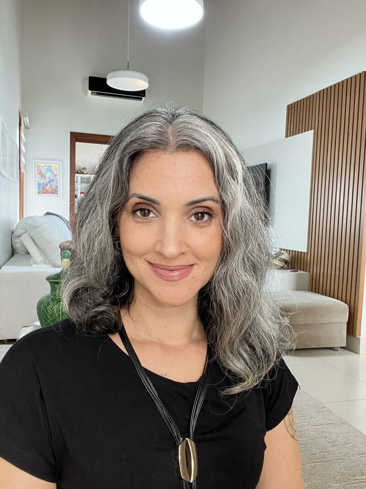
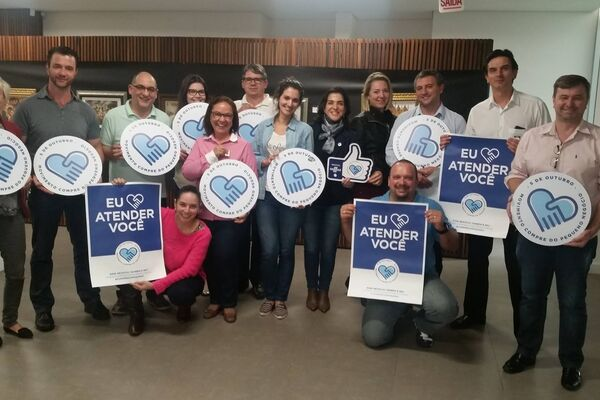
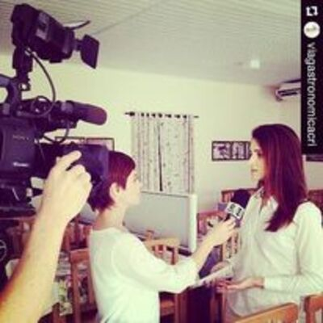
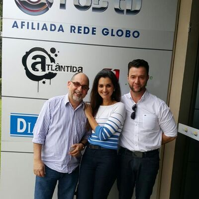
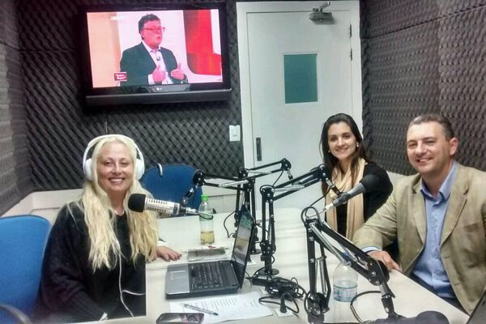
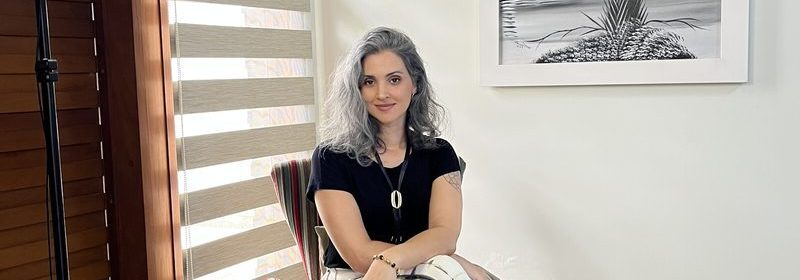

Passei dez anos dentro de um negócio criativo. Sei o que acontece quando o produto depende de artesanato e o improviso tem custo real.
Fui gestora de um restaurante de 2011 a 2021. Cuidei de equipe, produto artesanal, sazonalidade, atendimento e comunicação. Aprendi que uma boa estrutura não mata a criatividade. Ela é o que permite que o artista continue criando.
Uma boa estrutura não mata a criatividade. Ela a protege.
Tenho formação em Marketing e Branding e mais de dez anos em estratégia digital. O que me distingue não é apenas o currículo: passei anos dentro de um negócio criativo de verdade, onde o público era exigente e cada decisão tinha consequência.
De dentro de um negócio criativo para o lado de quem constrói o seu.
Entre 2015 e 2019 também planejei e executei projetos para festivais gastronômicos, atuando como diretora de marketing da Associação de Restaurantes de Criciúma.
Essa experiência me ensinou que marketing para negócios criativos não funciona como marketing genérico. O produto é pessoal, o processo é artesanal, o tempo é diferente. A comunicação precisa respeitar isso.
Quando saí da operação, levei comigo a clareza de quem já esteve dos dois lados: o de quem cria e o de quem precisa fazer o trabalho ser visto.




Hoje trabalho com quem cria e quer ser encontrado por quem valoriza.
Artistas visuais, ceramistas, designers, profissionais criativos que querem estruturar presença digital e criar as condições para que as pessoas certas cheguem, sem perder a identidade do trabalho.
Organizei essa atuação em duas frentes: a ECOS, uma consultoria que investiga e dá direção ao negócio, e a FLUXOS, uma assessoria contínua que cuida da comunicação e da mídia.

Se o seu trabalho já é bom e precisa ser visto, podemos conversar.
O primeiro passo é entender o momento do seu negócio. A partir daí, fica mais claro por onde começar.
Entre em contato